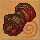
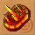
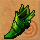
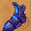
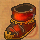

圖示產品名重量等級需求工作經驗商店售價需要原料
奧林神盔150110385140奧林金屬 2 妖魔石 1 鳳凰羽毛 1
歐丁神盔150120425737歐丁金屬 2 元素結晶 1 鳳凰爪 1
泰坦神盔150130456367泰坦金屬 2 靈魂石 1 鳳凰眼淚 1
路娜法冠30110385136路娜晶石 1 巨神木 1 鳳緞 1
狄米斯羽冠30120425988狄米斯晶石 1 古松 1 鳳綢 1
約書亞皇冠30130456384約書亞晶石 1 靈檜 1 錦絹 1
 力士之手50110386547奧林金屬 1 鳳緞 1 蘇理米金屬 1
戰神之手50120427800歐丁金屬 1 鳳綢 1 克艾隆金屬 1
巨魔之手50130458647泰坦金屬 1 錦絹 1 蓋亞金屬 1
巨神兵之盾150110386305奧林金屬 3 巨神木 1 鳳凰羽毛 1
 古代重型盾150120427218歐丁金屬 3 古松 1 鳳凰爪 1
靈木吸收盾150130458187泰坦金屬 3 靈檜 1 鳳凰眼淚 1
 奧林戰鬥靴100110387173奧林金屬 2 鳳緞 1 鳳凰羽毛 1
 歐丁戰鬥靴100120428494歐丁金屬 2 鳳綢 1 鳳凰爪 1
 泰坦戰鬥靴100130459392泰坦金屬 2 錦絹 1 鳳凰眼淚 1
路娜晶戒20110 | | | | | | | | | | | | | | | | | | | | | | | | | | | | | | | | | | | | | | | | | | | | | | | | | | | | | | | | | | | | | | | | | | | | | | | | | | | | | | | | | | | | | | | | | | | | | | | | | | | | | | | | | | | | | | | | | | | | |